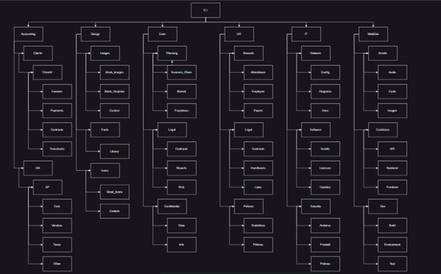
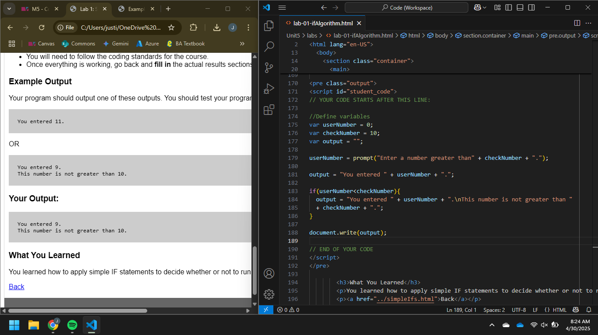
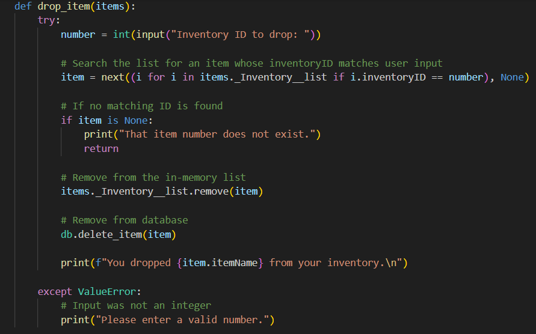
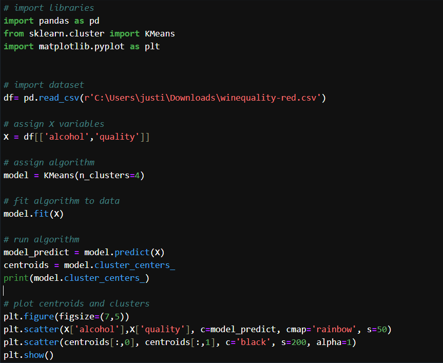

“Computer science education cannot make anybody an expert programmer any more than studying brushes and pigment can make somebody an expert painter.”
- Eric S. Raymond
Much of using a computer may be considered intuitive, or relatively easy for the average user to figure out. This course teaches skills to take computer usage one step above average, covering things like filesystem management and navigation through command line interface, troubleshooting and problem solving, basic programming skills, and itroduces us to Github!

Some key takeaways I took from this course include:This course takes what we learned in Intro to Computers and Programming and builds upon the basic programming skills learned, strengthening our fundamentals through pseudocode, HTML, and Javascript

Some key takeaways I took form this course include:This course acts as our first real introduction to Object Oriented Programming, focusing on basic python skills, importing and using libraries, and creating and using objects and classes.

Some key takeaways I took from this course include:This course delves into foundational machine learning techniques designed to analyse data, going over machine learning model fundamentals, training and testing techniques, and which algorithms to use to suit your model to your needs.

Some key takeaways I took from this course (so far) include: